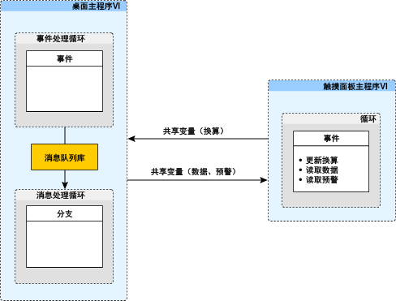

LabVIEW 2015
触摸面板项目模板提供创建LabVIEW触摸面板应用程序的起始点，此类应用程序针对NI触摸面板设备。本模板的设计有助于用户轻松开始触摸面板项目。
该模板的桌面主程序VI基于队列消息处理器(QMH)模板。关于如何使用该设计模式的详细信息，见QMH模板的相关文档。
触摸面板项目模板包含一个触摸面板主程序VI和一个桌面主程序VI。这些VI使用共享变量通信。下图为模板的架构示意图。每个VI及其通信架构描述如下。
触摸面板主程序VI的前面板使用选项卡控件对输入控件和显示控件进行逻辑分组。用户可根据应用程序需求添加输入控件和显示控件至每个选项卡。
触摸面板主程序VI基于事件处理器架构。在事件结构的超时分支中，终端读取共享变量数据和预警，并分别更新显示控件数据和预警<替换该项>。在缩放<替换该项>分支中，当用户修改缩放<替换该项>控件时，控件将触发一个更新共享变量事件。桌面主程序VI读取该事件。
桌面主程序VI架构基于队列消息处理器(QMH)模板。关于QMH架构的详细信息，见QMH模板的相关文档。
桌面主程序VI的主要功能是生成、处理和发送数据。信号生成和信号处理发生在事件结构（位于事件处理循环）的“超时”分支中。随机数生成器生成数据，并根据触摸面板主程序VI中指定的换算值进行换算。换算后的数据通过消息队列库发送至消息处理循环。
在消息处理循环的“发生数据”分支中，主机从事件处理循环处理数据。该值通过“数据”共享变量传输至终端。同时还将该数据与警告阈值<替换该项>控件进行比较，然后将预警状态写入由终端读取的“预警”共享变量。
触摸面板项目模板演示了基本功能和通信策略。用户可根据应用程序的实际需求修改本模板的下列元素。
用户可删除或重命名标有<替换该项>的控件，还可添加自定义的控件至选项卡控件。根据应用程序的实际分组需求，可能需要重命名选项卡并调整选项卡数量。
由于触摸面板计算机的处理能力有限，National Instruments建议在可能的情况下，将计算任务转载至桌面或其他功能更加强大的终端。如需自定义程序框图，可根据应用程序需求删除或重命名现有的共享变量。对于添加至前面板的每个控件，可根据需要创建一个事件分支。和所有事件结构一样，请尽量避免重复每个分支相关的代码。共享变量可在事件结构的“超时”分支中读取。
用户可更新或删除警告阈值<替换该项>控件。还可根据应用程序的实际需求添加控件。
用户可使用自定义的数据生成或采集代码，修改事件处理循环“超时”分支的数据生成和数据处理方式。数据处理量不大时也可保留“超时”分支中的现有数据处理方式。但如果应用程序的计算量需求庞大，可将数据处理移至消息处理循环。如需移动数据处理至消息处理循环，可在条件结构中添加一个专门用于数据处理的分支。
在消息处理循环的“发送数据”分支中，可根据应用程序的实际需求删除或修改预警功能。
注：本模板中的数据传输是有损耗的。如需实现无损耗数据传输，National Instruments建议使用其他数据传输协议，如网络流。
关于模板中使用的LabVIEW对象的详细信息和基本概念，请参考LabVIEW帮助。请单击帮助» LabVIEW帮助打开LabVIEW帮助。当光标移动到各个LabVIEW对象上时，即时帮助窗口中显示对象的基本信息。选择帮助»显示即时帮助，可打开即时帮助窗口。
版权
© 2014-2015 National Instruments.版权所有
根据版权法，未经National Instruments公司事先书面同意，本发行物不得以任何形式（包括电子或机械形式）进行全部或部分复制或传播，包括影印、录制、翻译，或储存于任何信息检索系统中。
National Instruments公司尊重他方的知识产权，也恳请用户能给予我们同样的尊重。NI软件受版权法及其他知识产权法的保护。在将NI软件用于复制为他方所有的软件或其他资料的任何场合，NI软件仅可用于在符合许可证或其他法律限制的情况下复制上述资料。
最终用户许可协议和第三方法律声明
安装结束后，可在下列位置找到最终用户许可协议(EULA)和第三方法律声明：
美国政府的有限权利
如果客户隶属于美国政府的一个机构、部门、或其他单位，则本手册所涵盖的技术信息的使用、拷贝、复制、发布、修改、披露或传递应当受到适用于民间机构的联邦采购条例52.227-14和适用于军用机构的联邦国防采购条例补充规定252.227-7014和252.227-7015中有限权利条款的约束。
IVI Foundation版权声明
Content from the IVI specifications reproduced with permission from the IVI Foundation.
The IVI Foundation and its member companies make no warranty of any kind with regard to this material, including, but not limited to, the implied warranties of merchantability and fitness for a particular purpose. The IVI Foundation and its member companies shall not be liable for errors contained herein or for incidental or consequential damages in connection with the furnishing, performance, or use of this material.
商标
关于National Instruments商标信息，请访问ni.com/trademarks的NI Trademarks and Logo Guidelines页面。此处提及的其他产品和公司名称均为其各自公司的商标或商业名称。
专利权
关于NI产品和技术的专利权，请查看软件中的帮助»专利信息，光盘中的patents.txt文件，或ni.com/patents上的National Instruments Patent Notice。